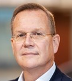

Ten geleide

Voor u ligt het jaarbericht 2024, dat aan de hand van verschillende beschouwingen en verslagen een terugblik op het opleidingsjaar 2024 geeft. Een jaar dat voor SOOL op het persoonlijke vlak vooral indrukwekkend getekend werd door een schokkend sportongeval van onze collega Paula Broersen, onderwijskundige; een ongeval dat haar leven in 1 klap dramatisch veranderde. Over hoe het haar nu vergaat schrijft Paula zelf, verderop in dit jaarbericht.
“Zakelijk” was 2024 voor SOOL weer een mooi en succesvol opleidingsjaar: in september 2024 is het nieuwe Landelijke Opleidingsplan Specialisme Ouderengeneeskunde ingegaan en de implementatie daarvan is heel goed verlopen; om onze AIOS te ontzorgen is SOOL in 2024 begonnen met het (laten) ontwikkelen van een fraaie AI-SOOL-chatbot voor alle vragen over wet- en regelgeving en organisatie van de opleiding; de groei van de opleiding in Leiden en Rotterdam zette gestaag door; de inspirerende samenwerking met de opleiding AVG en huisartsenopleiding in Rotterdam, de huisartsenopleiding in Leiden en de samenwerking binnen het LUMC Centrum voor Ouderengeneeskunde (LCO), geeft een hoop energie en heeft weer mooie initiatieven op o.a. het gebied van interprofessioneel opleiden en onderzoek van onderwijs opgeleverd. Maar het mooiste van 2024 is toch wel weer het warme “Wij”-gevoel en het werkplezier binnen ons SOOL-team, met een steeds vanzelfsprekend voor elkaar klaarstaan ondanks alle drukke agenda’s, jachtige praktijk en ontwikkelingen/groei van de opleiding.
Ook in 2024 bleef SOOL actief bijdragen aan het bekender maken van de ouderengeneeskunde, door steeds de uitdagende aantrekkelijkheid van het vak en onze opleiding over het voetlicht te brengen. Een mooi voorbeeld is de, door de SBOH mogelijk gemaakte, unieke Leidse, pilot om de opleiding specialisme ouderengeneeskunde te combineren met de opleiding klinische farmacologie. Deze pilot is in 2024 goed op stoom gekomen: Robin van Luipen zal hier verderop in dit jaarbericht verslag van doen.
Het verkorte, aangepaste opleidingsprogramma voor medisch specialisten die de overstap naar het specialisme ouderengeneeskunde willen maken blijft een succes. Niet onbelangrijk aspect van dit programma betreft de door Actiz ter beschikking gestelde middelen om het, bij een overstap naar de opleiding, ontstane loongat van deze 2e-carriere-aios te dichten. De THE NEXT LEVEL DOKTER-campagne, om meer bekendheid te geven aan de aantrekkelijkheid van opleidingen voor artsenberoepen buiten het ziekenhuis, met als doel om tegemoet te komen aan de grote maatschappelijke behoefte om meer artsen in deze beroepen op te leiden, loopt nog steeds als een trein. In het verlengde van deze campagne heeft SOOL in 2024 het initiatief genomen om, samen met de SBOH en de opleidingsinstituten Verslavingsgeneeskunde (Nijmegen); Arts Verstandelijk Gehandicapten (Rotterdam) en Huisartsengeneeskunde (Rotterdam en Leiden) den) de haalbaarheid te onderzoeken van een pilot “Traineeship artsenberoepen buiten het ziekenhuis” in de regio Rotterdam eo.
Interessant ook om te noemen is de bemiddeling van SOOL bij het vinden van werkervaringsstageplaatsen voor buitenlandse artsen (met belangstelling in de ouderengeneeskunde) die op de (anderhalf jaar durende!) wachtlijst staan voor het mogen afleggen van de BIG-toets.
Het kennis- en ervaringsniveau van de nieuwe kandidaat-AIOS bleek ook in 2024 weer hoog. Wij zijn er in Leiden trots op dat wij AIOS een individueel opleidingsschema op maat bieden, dat royaal ruimte biedt aan persoonlijke wensen en voorkeuren; ook daar zijn wij dit jaar weer in geslaagd. Wij zijn er in Leiden ook trots op dat, dankzij een kritische selectie en een gezamenlijk streven de lat hoger te leggen, de specialisten ouderengeneeskunde die de opleiding dit jaar hebben verlaten, geheel conform de missie van onze opleiding, weer echte visitekaartjes van onze opleiding en ons mooie veelzijdige vak zijn: specialisten ouderengeneeskunde 2.0.
AIOS omschrijven de ouderengeneeskunde als het vak van de toekomst: volop in ontwikkeling; een veelzijdig specialisme; generalistisch maar ook specialistisch; een vak met uitdagende complexe problematiek, door multimorbiditeit en polyfarmacie de richtlijnen voorbij; een vak voor mensen die oprechte interesse hebben in de (oudere maar heel vaak ook jongere) medemens en die van moeilijke puzzels houden, oog hebben voor wat er toe doet in het leven en die vooral ook gericht zijn op samenwerking, want voor de ouderengeneeskunde moet je echt een teamspeler zijn, een teamspeler die zijn werkterrein steeds meer ook buiten het verpleeghuis zal vinden, in het ziekenhuis en vooral ook in de eerste lijn.
De Specialisme Ouderengeneeskunde Opleiding Leiden maakt samen met de vervolgopleiding Huisartsgeneeskunde deel uit van de afdeling Public Health en Eerstelijns Geneeskunde (PHEG) van het Leids Universitair Medisch Centrum (LUMC) die naast genoemde vervolgopleidingen ook de disciplines Sociale Geneeskunde, Medische Antropologie en E-health omvat.
Leiden is in Nederland de ‘Silicon Valley’ van de ouderengeneeskunde: SOOL heeft het voorrecht zich in Leiden ingebed te weten in ’s lands grootste academische netwerkomgeving voor ouderengeneeskunde en diversiteit. SOOL kan daardoor gebruikmaken van diverse expertisecentra met elk belangrijke aandachtsgebieden binnen de ouderengeneeskunde, namelijk:
- LUMC Centrum voor Ouderengeneeskunde (LCO)
- LUMC-interne geneeskunde-ouderengeneeskunde
- binnen PHEG de onderdelen (Public) Population Health en medische antropologie
- Universitair Netwerk voor de Care sector Zuid-Holland (UNC-ZH)
- Leyden Academy on Vitality and Ageing
- de enige huisartsopleiding in Nederland met ouderengeneeskunde als specifiek aandachtsgebied; een hoogleraar ouderengeneeskunde en de differentiatie ouderengeneeskunde voor AIOS huisartsgeneeskunde
- Master Health, Ageing and Society
- Kaderopleiding Geïntegreerde Eerstelijns Ouderengeneeskunde
Binnen deze netwerkomgeving is het in 2022 opgerichte LCO, LUMC Centrum voor Ouderengeneeskunde (waar het vroegere AGE (Academische werkplaats voor Geriatrie in de Eerste lijn en de langdurige zorg) in is opgegaan), voor samenwerken en verbinden in onderzoek en onderwijs in de ouderenzorg, in 2024 verder tot bloei gekomen. Een fraai uithangbord van het LCO en PHEG is de jaarlijkse Leidse Ouderengeneeskundedag: een succesvolle, gezaghebbende, landelijke nascholing op het gebied van de ouderengeneeskunde. SOOL wil actief aangesloten blijven bij dit LCO om ook van hieruit gezamenlijk en interprofessioneel leren en opleiden te stimuleren en faciliteren.
Mede dankzij deze academische omgeving en de hooggewaardeerde samenwerking daarbinnen, kon ons opleidingsinstituut ook weer in 2024 een belangrijke slag maken in de kwaliteitsverbetering van de opleiding specialisme ouderengeneeskunde; daarbij recht doende aan het voortdurend streven te verbeteren en te vernieuwen en aan de geformuleerde missie, visie en speerpunten:
Missie
SOOL leidt AIOS op tot kundige, vooruitstrevende en betrokken specialisten ouderengeneeskunde, die leiderschap tonen en met oprechte interesse in de individuele kwetsbare (oudere) patiënt, het verschil maken.
Visie
SOOL wil, door zichzelf steeds te verbeteren, een toonaangevende en aantrekkelijke opleiding specialisme ouderengeneeskunde zijn, waar kwalitatief goed, wetenschappelijk onderbouwd en zo mogelijk interprofessioneel onderwijs gegeven wordt, in samenwerking met opleiders en diverse andere disciplines uit zowel de eerste als tweede lijn.
Door verbinding een bijdrage leveren aan de continue verbetering van de ouderenzorg in Nederland, staat bij SOOL voorop. SOOL maakt actief deel uit van het, landelijk meest uitgebreide, Leidse netwerk van scholings- en onderzoeksinstituten op het gebied van de ouderengeneeskunde en ouderenzorg. AIOS kunnen tijdens de opleiding laagdrempelig gebruikmaken van het volledige scholingsaanbod van de Leidse netwerkpartners.
SOOL vraagt veel van AIOS: een ambitieuze inzet en een hoge mate van betrokkenheid en zelfreflectie. Omgekeerd mogen AIOS alles van SOOL vragen wat hun scholing en vorming tot specialist ouderengeneeskunde ten goede komt. SOOL is vooruitstrevend, flexibel, betrokken en voldoet proactief aan haar maatschappelijke taak om continu in te spelen op veranderingen in de samenleving t.a.v. de ouderenzorg. Over SOOL wordt gezegd: ‘Bij SOOL wordt ‘de lat hoog gelegd’ en ‘Bij SOOL doen ze meer’.
Kernwaarden
Vernieuwen, verbeteren en verbinden.
Speerpunten
- Curriculum herziening
- Communicatie met aios en opleiders
- Groei van de opleiding
- Wetenschappelijke vorming
- Interprofessioneel Opleiden
- Individueel afgestemd opleidingsplan aios